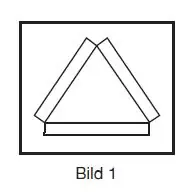
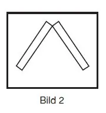
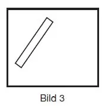
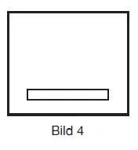

§ 12.02 Funktion der Lichtwahrschau auf der Strecke Oberwesel – St. Goar
Rheinschiffahrtspolizeiverordnung
1. An der Strecke Oberwesel – St. Goar sind folgende Signalstellen eingerichtet:
Signalstelle A: | km 550,57, linkes Ufer, am Ochsenturm bei Oberwesel; |
Signalstelle B: | km 552,80, linkes Ufer, am Kammereck; |
Signalstelle C: | km 553,61, linkes Ufer, am Betteck; |
Signalstelle D: | km 554,34, linkes Ufer, gegenüber der Loreley („Die Lützelsteine“); |
Signalstelle E: | km 555,43, linkes Ufer, an der Bank. |
2. Der Bergfahrt wird die Annäherung von Talfahrern – mit Ausnahme von Kleinfahrzeugen – an den Signalstellen A, C, D und E angezeigt.
Jede dieser Signalstellen zeigt der Bergfahrt ihre Lichtzeichen auf übereinander stehenden Feldern, die folgenden Teilstrecken zugeordnet sind:
Feld | Nummer der Teilstrecke | Oberstromgrenze der Teilstrecke | Unterstromgrenze der Teilstrecke |
Signalstelle A: am Ochsenturm | |||
oben | 1 | km 548,50 | km 549,50 |
unten | 2 | km 549,50 | km 550,57 |
Signalstelle C: am Betteck | |||
oben | 3 | km 550,57 | km 551,30 |
Mitte | 4 | km 551,30 | km 552,40 |
unten | 5 | km 552,40 | km 553,60 |
Signalstelle D: gegenüber der Loreley („Die Lützelsteine“) | |||
oben | 4 | km 551,30 | km 552,40 |
Mitte | 5 | km 552,40 | km 553,61 |
unten | 6 | km 553,61 | km 554,34 |
Signalstelle E: an der Bank | |||
oben | 6 | km 553,61 | km 554,34 |
unten | 7 | km 554,34 | km 555,43 |
3. Die Zeichen an den Signalstellen bedeuten für die ihnen zugeordneten Teilstrecken:
a) Drei weiße, ein Dreieck bildende Lichtlinien (Bild 1):
In der Teilstrecke fährt mindestens ein Verband mit einer Länge über 110 m zu Tal. |  |
b) Zwei dachförmig gegeneinander geneigte weiße Lichtlinien (Bild 2):
In der Teilstrecke fährt mindestens ein Verband mit einer Länge bis 110 m oder ein Fahrzeug mit einer Länge über 110 m oder mit einer Breite über 15 m zu Tal. |  |
c) Eine nach rechts geneigte weiße Lichtlinie (Bild 3):
In der Teilstrecke fährt mindestens ein Fahrzeug mit einer Länge bis 110 m zu Tal. |  |
d) Eine waagerechte weiße Lichtlinie (Bild 4):
In der Teilstrecke befindet sich kein Talfahrer. |  |
4. Ferner können an den Signalstellen folgende Zeichen gezeigt werden:
a) an der Signalstelle A
aa) ein weißes Licht, nur für die Talfahrt sichtbar:
den Talfahrern wird mitgeteilt, dass die Lichtwahrschau in Betrieb ist.
bb) zusätzlich ein weißes Blinklicht, nur für die Talfahrt sichtbar:
ein Verband mit einer Länge über 110 m fährt am Tauberwerth (Teilstrecke 3) zu Berg.
b) an der Signalstelle B
ein weißes Blinklicht, nur für die Talfahrt sichtbar:
ein Verband mit einer Länge über 110 m umfährt das Betteck zu Berg.
6. Eine Sperrung der Schifffahrt für die Talfahrt wird an den Signalstellen A oder B durch zwei nur für die Talfahrt sichtbare rote Lichter übereinander angezeigt.
Eine Sperrung der Schifffahrt für die Bergfahrt wird an den Signalstellen D oder E durch zwei nur für die Bergfahrt sichtbare rote Lichter übereinander angezeigt.